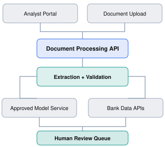
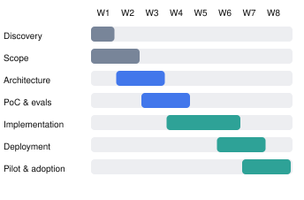

Chapter overview
Imagine you've just joined a company as a Forward Deployed Engineer.
On Monday morning, your manager introduces you to a new enterprise customer.
The customer has purchased your company's AI platform and wants to use it to automate a critical business process.
Their leadership wants results in eight weeks.
Their engineering team says integration will take months.
Their compliance team hasn't approved the architecture.
And nobody agrees on what the first version of the solution should actually do.
Where do you begin?
A traditional engineering assignment might start with a Jira ticket, acceptance criteria, and an existing codebase.
An FDE engagement often starts with an ambiguous business problem and a collection of stakeholders who have different expectations.
Your responsibility is to turn that ambiguity into a working, secure, valuable solution.
This chapter explains how.
Learning objectives
By the end of this chapter, you should be able to:
Describe the major stages of a customer-facing FDE engagement.
Conduct initial discovery and establish measurable success criteria.
Translate customer needs into technical requirements and implementation milestones.
Understand when to prototype, build, test, deploy, and iterate.
Identify the deliverables an FDE should produce at each stage.
Recognize common failure patterns before they become expensive.
3.1 The seven stages of an FDE engagement
There is no universal FDE delivery methodology. Different organizations use different engagement models, and many stages overlap.
For this Academy, we'll use a practical seven-stage framework.
The FDE engagement lifecycle
01
Discover
Understand the problem
02
Define
Agree on success
03
Design
Choose the architecture
04
Validate
Reduce technical uncertainty
05
Build
Implement the solution
06
Deploy
Make it operational
07
Adopt & Iterate
Prove customer value
Each stage has a different primary question.
Stage | Question the FDE must answer |
|---|---|
Discover | What problem are we actually solving? |
Define | What does success look like? |
Design | How should we solve it? |
Validate | Will the critical assumptions hold? |
Build | Can we implement the agreed solution? |
Deploy | Can it run reliably in the customer's environment? |
Adopt & Iterate | Is it delivering value, and what should improve? |
The important distinction is that deployment is not the finish line.
A technically successful deployment that nobody uses is not necessarily a successful customer engagement.
3.2 Our running case study: Meridian Bank
We'll follow a fictional customer engagement throughout this chapter.
Meridian Bank
Industry: Financial services · Project: AI-assisted loan document review
Meridian Bank employs 40 analysts who review financial documents submitted during commercial loan applications.
Each application involves reviewing uploaded documents, extracting financial figures, checking internal systems, identifying missing information, and preparing a summary for an underwriter.
Leadership believes AI can dramatically reduce manual work.
40
Analysts
45 min
Current review time
8 weeks
Target pilot timeline
The customer asks:
"We want an AI agent that reads our documents, performs underwriting checks, and automatically approves straightforward applications. Can you build this in eight weeks?"
A weak approach would be to agree immediately and start implementing an agent.
An effective FDE recognizes several unanswered questions.
What counts as a straightforward application? Who is legally and operationally authorized to approve loans? Which checks are deterministic? What accuracy is required? Is automated approval even within the authorized scope?
The first task is not building the AI agent.
It's understanding the environment and establishing what can responsibly be delivered.
3.3 Stage 1 — Discovery
Goal: Understand the real problem before selecting a solution.
Discovery is the process of learning how the customer operates, where the problem exists, and which constraints influence the implementation.
A strong discovery process investigates four dimensions.
Business
Why is the customer investing in this project? What financial or operational outcome matters?
Workflow
What do users do today? Which steps are manual, slow, repetitive, or error-prone?
Technology
Which systems, APIs, data sources, and infrastructure must the solution interact with?
People and governance
Who approves decisions? Who owns the data? What security, compliance, and operational requirements apply?
Example: Meridian Bank discovery
During the first week, the FDE interviews analysts, underwriters, the engineering team, and the compliance department.
They discover that the 45-minute review process consists of:
Activity | Time per application |
|---|---|
Reading documents | 15 min |
Extracting key values | 10 min |
Validating against internal records | 12 min |
Preparing review summary | 8 min |
Total | 45 min |
The customer originally requested automated underwriting approvals.
But discovery reveals that approvals involve additional risk and governance controls that aren't ready for automation.
The FDE recommends a narrower initial pilot: automate document extraction and draft summaries, while retaining human validation and decision-making.
This reduces scope and creates a safer, more achievable delivery target.
Discovery deliverables
By the end of discovery, the team should ideally have:
A current-state workflow map.
A stakeholder map identifying decision-makers and technical owners.
A list of customer pain points and constraints.
An inventory of relevant systems and data sources.
A record of unresolved questions and assumptions.
FDE principle: Don't confuse a requested feature with the underlying problem.
"We need an AI agent" is a proposed solution.
"Our analysts spend too much time extracting and reconciling information" is a problem worth investigating.
3.4 Stage 2 — Define scope and success
Goal: Convert ambiguous goals into testable outcomes.
After discovery, the FDE must align stakeholders on what the team is actually committing to deliver.
For Meridian Bank, the original objective was:
"Use AI to make underwriting faster."
This is not sufficiently measurable.
A stronger pilot objective might be:
Reduce average analyst review time from 45 minutes to 30 minutes or less for eligible document packages, while maintaining required human approvals and meeting agreed accuracy and security criteria.
The team must still define what counts as an eligible package and how accuracy will be measured.
Functional versus nonfunctional requirements
Functional | Nonfunctional |
|---|---|
Extract specified fields from PDFs | Process documents within agreed latency |
Flag missing information | Encrypt sensitive data |
Compare values with internal records | Restrict access by user role |
Generate draft summaries | Record audit events |
Route uncertain cases to reviewers | Meet availability and retention requirements |
Both matter.
A prototype that extracts values accurately but violates the customer's data handling requirements is not production-ready.
Acceptance criteria
For our fictional pilot, stakeholders agree on proposed criteria:
At least 95% field-level extraction accuracy on an agreed representative test set.
Average review time of 30 minutes or less for eligible applications.
Human review before underwriting decisions.
Role-based access and auditable actions.
No unapproved transfer of customer data.
These are illustrative project targets, not universal banking or AI compliance standards. The customer must approve the actual thresholds and testing methodology.
The scope document
A concise engagement scope should answer:
What are we building? An AI-assisted document extraction and review workflow.
What are we not building? Autonomous loan approval, a new loan origination system, or replacement of the bank's risk controls.
How will success be measured? Review time, extraction accuracy, user adoption, and operational reliability.
Who signs off? Named business, engineering, security, and compliance stakeholders.
What are the dependencies? Test data, API access, approved deployment infrastructure, and user availability.
Without this alignment, teams can deliver exactly what they built and still disappoint the customer.
3.5 Stage 3 — Solution design
Goal: Design an architecture that fits the customer's environment.
Now that the team understands the requirements, it can make informed architectural decisions.
The FDE works with customer engineers and, where available, Solutions Architects to design the system.
For Meridian Bank, a simplified architecture might look like this:

Simplified conceptual architecture. Production design would also include identity, logging, storage, network boundaries, failure handling, and monitoring.Architectural questions an FDE should ask
Where will the application run?
What data can leave the customer's environment?
Which APIs are available and what are their limits?
How will authentication and authorization work?
How will failures and retries be handled?
How will we monitor quality and operational performance?
Can the solution be supported after the initial engagement?
Build versus configure versus reuse
One of the most valuable FDE skills is knowing when not to write new code.
Suppose the company's platform already provides document extraction, workflow orchestration, and audit logging.
Building custom replacements for those capabilities may increase maintenance costs and delay deployment.
The FDE should evaluate whether the requirement can be satisfied through existing product features, configuration, reusable components, or a focused custom integration.
The best architecture is not necessarily the most sophisticated. It's the one that meets the agreed requirements with acceptable risk, complexity, and operational cost.
3.6 Stage 4 — Technical validation and proof of concept
Goal: Test the riskiest assumptions before committing to the full implementation.
A proof of concept (PoC) is a focused experiment designed to determine whether an approach is technically feasible.
It is not necessarily a polished application.
For Meridian Bank, the riskiest assumptions might be:
Can the document extraction system accurately process scanned financial statements?
Can it handle inconsistent document layouts?
Can the application connect to the bank's internal systems?
Can the solution operate within approved security boundaries?
Are processing times and operating costs acceptable?
The FDE should prioritize these uncertainties rather than building a beautiful interface first.
PoC vs. prototype vs. MVP vs. pilot
Term | Primary purpose |
|---|---|
Proof of concept | Test technical feasibility |
Prototype | Demonstrate or explore an interaction or workflow |
MVP | Deliver the smallest usable solution that provides value |
Pilot | Evaluate a solution with a limited group or controlled scope |
These terms sometimes overlap in industry practice, but the distinction is useful when planning an engagement.
AWS's guidance on generative AI proofs of concept similarly emphasizes validating business value, data readiness, technical feasibility, and project risks rather than merely producing an impressive demo.
Example: A meaningful PoC
Instead of building the complete application, the FDE selects 100 representative, authorized test documents.
The team measures extraction accuracy, failure modes, latency, and the types of documents requiring manual intervention.
Suppose the experiment produces these fictional results:
Illustrative PoC results
Field extraction accuracy
91%
Target: 95%
Median processing time
18 sec
Per document package
The accuracy target has not been met. The team must investigate the errors and decide whether to improve the approach, narrow the eligible document types, or revise the plan with stakeholder approval.
A strong FDE doesn't conceal an unsuccessful experiment.
They explain what was learned, the impact on the project, and the options available.
A failed PoC can be a successful engineering activity if it prevents a costly production mistake.
3.7 Stage 5 — Implementation
Goal: Build the smallest production-appropriate solution that meets the agreed requirements.
Once critical assumptions are sufficiently validated, the team can proceed with implementation.
For Meridian Bank, the implementation could include a document ingestion API, extraction service, validation logic, integration with bank records, a human review interface, and audit logging.
The FDE should balance speed with engineering quality.
The danger of the demo trap
An impressive demo may work with three carefully selected documents and fail when exposed to real-world inputs.
Common shortcuts include hardcoded credentials, missing error handling, undocumented dependencies, no automated tests, and manually configured environments.
These shortcuts can make a prototype look complete when it is not operationally ready.
Engineering practices that still matter
FDEs should apply sound engineering practices appropriate to the risk and expected lifetime of the solution.
Version control
Track source code and configuration changes.
Automated testing
Cover critical workflows, integrations, and failure scenarios.
Observability
Capture relevant metrics, logs, and traces without exposing sensitive information.
Security
Use approved secrets management, access controls, and data handling practices.
Documentation
Explain deployment steps, architecture decisions, and operational procedures.
Reusability
Identify components that could benefit future customer engagements.
Managing changing requirements
Suppose Meridian Bank requests automated loan approval halfway through implementation.
That feature was explicitly excluded from the pilot.
An FDE should not silently add it, nor simply dismiss the customer.
A better response is to clarify the underlying need, explain the technical and governance implications, estimate the impact, and present options for a separately approved future phase.
Ownership does not mean agreeing to every customer request. It means making informed decisions and communicating trade-offs.
3.8 Stage 6 — Deployment and production readiness
Goal: Make the solution reliable, secure, supportable, and usable.
A solution that works on a developer's laptop is not necessarily ready for enterprise deployment.
Before production rollout, the FDE should help verify several dimensions.
Interactive deployment checklist
Security
Reliability
Operations
Customer acceptance
The deployment is not complete at go-live
Suppose the application successfully deploys on Friday.
On Monday, analysts discover that some document types are not supported. On Tuesday, an internal API starts returning rate-limit errors. On Wednesday, the compliance team requests additional audit information.
The FDE must help stabilize the solution, triage issues, communicate impact, and coordinate fixes.
This period is sometimes called hypercare: heightened monitoring and support immediately after rollout.
3.9 Stage 7 — Adoption, measurement, and iteration
Goal: Demonstrate that the deployed solution produces real customer value.
The most important question after deployment is not simply whether the application works.
It is whether the customer's original problem has improved.
For Meridian Bank, the team compares the new workflow against the baseline.
Illustrative pilot outcomes
- Before pilot: Average review time 45 min
- After pilot: Average review time 29 min
Fictional pilot data for educational purposes.
Time reduction
35.6%
Minutes saved
16
The team should also monitor adoption, user satisfaction, error rates, operational costs, and whether analysts are consistently using the new workflow.
The feedback loop
One customer engagement can create value beyond the individual deployment.
For example, the Meridian Bank project might reveal that several customers need the same configurable validation workflow.
Rather than repeatedly building custom validation logic, the FDE can work with product engineering to propose a reusable feature.
This turns field learning into broader product improvement.
A recent account from a former Palantir forward-deployed engineering program leader similarly emphasizes that FDEs should help improve the product through customer experience, rather than functioning only as an implementation or sales support team.
3.10 What does an eight-week engagement look like?
Here is a realistic illustrative schedule for a tightly scoped pilot with timely customer access and approvals.
Meridian Bank — Eight-week pilot plan
Each cell represents one week. Workstreams overlap.

Actual timing depends on technical complexity, customer approvals, data availability, and scope. A regulated production deployment may take considerably longer.The schedule is useful because it shows that customer delivery is not a strict waterfall process.
Architecture can evolve while the PoC is underway. Implementation can begin for low-risk components while other assumptions are being validated. Deployment preparation should start well before the final week.
Essential FDE artifacts
Stage | Primary deliverable |
|---|---|
Discovery | Discovery notes and current-state workflow |
Definition | Scope, requirements, success criteria |
Design | Architecture diagram and decision record |
Validation | PoC findings and evaluation results |
Implementation | Tested source code and integration documentation |
Deployment | Runbook, readiness checklist, rollout plan |
Adoption | KPI report, issue backlog, handoff, product feedback |
An FDE doesn't necessarily create a lengthy document for every stage. The goal is to make decisions, dependencies, and ownership clear enough for the team to execute.
3.11 Recommended learning resources
These resources are selected to support specific stages of the engagement lifecycle. The video is most useful for discovery, while the technical documentation covers validation, pilot execution, and production readiness.
WATCH · REQUIRED · 31 MIN
Y Combinator · Eric Migicovsky
Learn how to investigate actual customer experiences rather than hypothetical feature requests.
Focus: 02:43–14:16, particularly the five customer interview questions.
READ · REQUIRED · 10–15 MIN
Architecting a Successful Generative AI Proof of Concept
AWS Prescriptive Guidance
Understand how to structure a PoC around business value, data readiness, technical feasibility, and delivery risk.
READ · REQUIRED · 5–10 MIN
AWS Prescriptive Guidance
Learn why a pilot needs predefined success criteria, stakeholder involvement, and evidence-based go/no-go decisions.
READ · OPTIONAL · 10 MIN
Operational Readiness and Change Management
AWS Well-Architected Framework
Study how teams evaluate deployment readiness, prepare runbooks, manage changes, and establish support processes.
READ · OPTIONAL · 10–15 MIN
The Forward Deployed Engineer Playbook
FDE Academy · Independent industry resource
An alternative six-stage view of FDE delivery, including prototyping, evaluation, production rollout, and the product feedback loop. Treat it as practitioner guidance rather than a universal standard.
3.12 Practical exercise — Rescue a failing engagement
Exercise 3.1
Scenario: The pilot is falling behind
You are the FDE leading Meridian Bank's eight-week pilot. It is the end of Week 3.
Your team has discovered that:
Extraction accuracy is 91%, below the agreed 95% target.
The customer has not yet approved production network access.
The business sponsor is requesting automated underwriting decisions.
The engineering team believes the original timeline is now at risk.
The customer asks for a status update and a revised delivery plan.
Your assignment is to prepare a short response explaining the current situation, risks, proposed actions, and recommended next steps.
Auto-saved on this device. Review your answer for customer impact, evidence, assumptions, ownership, and a clear next step.
Example FDE response
Current status: The pilot has validated the initial extraction architecture, but accuracy remains below target. Production network access is also a dependency.
Risks: We may not meet the original schedule without resolving the accuracy gap and infrastructure approvals. Automated underwriting is outside the agreed scope and requires separate business, risk, and compliance review.
Actions: Investigate extraction errors by document type, work with the customer's infrastructure team to establish an approved deployment path, and continue building components that do not depend on production access.
Recommended plan: Preserve the human-reviewed pilot scope. Reassess the timeline after the accuracy retest and access decision, and present a revised schedule based on those findings.
Customer decisions needed: Confirm whether the current pilot scope remains the priority, assign an owner for network approval, and approve any change to milestones.
Why this works: The response makes the problems visible without exaggerating progress or making unsupported delivery promises.
3.13 Knowledge check
3.14 Chapter summary
A successful FDE engagement is not simply a sequence of technical tasks.
It is a structured process for reducing uncertainty, aligning stakeholders, building useful software, and delivering measurable outcomes.
The seven stages are:
Discover: Understand the customer problem and environment.
Define: Agree on scope, requirements, and success criteria.
Design: Develop an architecture appropriate to the constraints.
Validate: Test risky assumptions before committing to full implementation.
Build: Implement the solution using sound engineering practices.
Deploy: Establish operational readiness and roll out safely.
Adopt & Iterate: Measure customer value and improve the solution.
The central principle of this chapter is:
An FDE owns the journey from customer ambiguity to measurable value, not just the code written along the way.
UP NEXT · MODULE 1 / CHAPTER 4
The FDE Mindset: From Code to Customer Outcomes
We'll explore how FDEs make decisions under uncertainty, challenge assumptions, prioritize business impact, manage trade-offs, and communicate effectively with stakeholders.
This chapter will include realistic decision-making scenarios where there isn't always one perfect technical solution.
Field notes
Capture the idea you will use in your next customer conversation.